Un siècle d'histoire, de Saint-Joseph à Marcel Callo
Vingt dates tirées du Bulletin n°1 de l'Amicale des anciens élèves (1984), chacune avec le document ou la photo qui la raconte. Cliquez sur un document pour l'agrandir.
Toutes les dates et tous les chiffres viennent du Bulletin n°1 ; la page est indiquée sous chaque document. Seule exception : la béatification de Marcel Callo (1987), postérieure au bulletin. Vous avez une photo de classe, un souvenir ou une date à corriger ? Écrivez-nous.
1922
Naissance de la branche technique
En annexe du cours complémentaire Saint-Joseph, rue Saint-Michel à Redon, est créée une branche technique. Ouverte sous le régime de la loi Astier, elle comporte une section de mécanique et une section de menuiserie.
Historique de l'école : la section technique à Saint-Joseph — Bulletin n°1 de l'Amicale des anciens élèves, 1984, p. 3
1932
Un atelier modèle… et une devise
Le bulletin de l'Amicale Saint-Joseph décrit l'atelier : un hall de 46 m sur 7, éclairé par le toit, une forge, des tours, une fraiseuse, trente-cinq étaux… Chaque machine a son moteur électrique : vingt-quatre en tout, dont plusieurs bobinés à l'école. Le directeur, M. Gardan, résume l'ambition : former « des ouvriers ayant l'amour de l'ouvrage bien fait ».
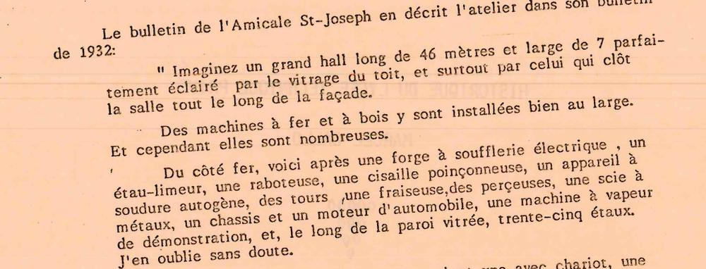
L'atelier décrit dans le bulletin de 1932 — Bulletin n°1 de l'Amicale des anciens élèves, 1984, p. 3
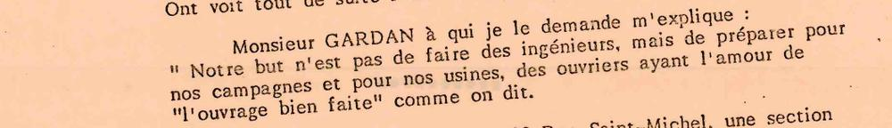
« L'ouvrage bien fait » : les mots du directeur — Bulletin n°1 de l'Amicale des anciens élèves, 1984, p. 3
1951
Les premiers CAP
Une section technique industrielle préparant au CAP et au BEI ouvre au 22, rue Saint-Michel.
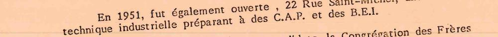
Ouverture de la section CAP et BEI — Bulletin n°1 de l'Amicale des anciens élèves, 1984, p. 3
1962
Les anciens votent la création de l'école
Réunis en Assemblée Générale, les anciens élèves demandent à l'unanimité la construction d'un collège technique. Un terrain de deux hectares est acheté avenue Étienne Gascon. L'école technique compte 289 élèves à la rentrée et prépare aux CAP d'ajusteur, d'électricien-monteur et de menuisier, ainsi qu'au BEI.
La demande unanime de l'Assemblée Générale des anciens — Bulletin n°1 de l'Amicale des anciens élèves, 1984, p. 3
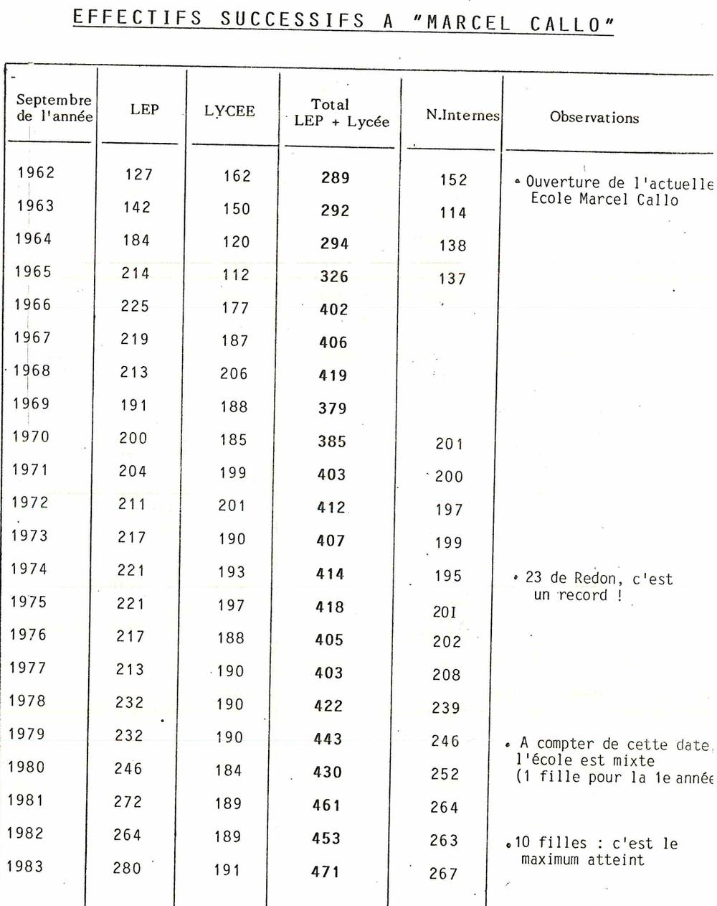
Effectifs de 1962 à 1983 : 289 élèves à l'ouverture — Bulletin n°1 de l'Amicale des anciens élèves, 1984, p. 16
1963
La première pierre, le jour de la réunion des anciens
Le 23 mai 1963, à l'issue de la messe célébrée le jour de la réunion des anciens élèves, Mgr Bonnelière bénit la première pierre de la future école technique, en présence de nombreux paroissiens et amis.
Bénédiction de la première pierre, 23 mai 1963 — Bulletin n°1 de l'Amicale des anciens élèves, 1984, p. 3
1964
La rentrée dans les nouveaux bâtiments
Sur les plans de l'architecte M. Rual, l'entreprise Ricordel construit la première tranche. En septembre 1964, la rentrée, retardée de quelques jours, se fait dans les nouveaux locaux : ateliers, laboratoires, résidence, cour et gymnase. Le Brevet de technicien (électrotechnique et construction mécanique) remplace le BEI.
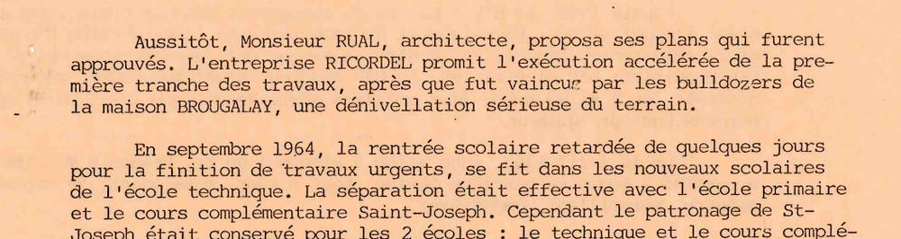
Construction et rentrée de septembre 1964 — Bulletin n°1 de l'Amicale des anciens élèves, 1984, p. 4
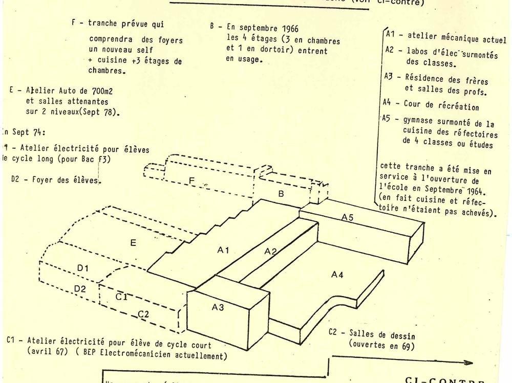
Plan des bâtiments : la tranche A est mise en service en septembre 1964 — Bulletin n°1 de l'Amicale des anciens élèves, 1984, p. 8
1965
Le premier banquet des anciens
Le 27 mai 1965, les anciens élèves des deux écoles Saint-Joseph sont accueillis pour la première fois dans la nouvelle école. Le banquet les rassemble sous le vaste gymnase.
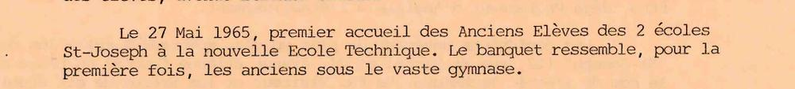
Premier accueil des anciens, 27 mai 1965 — Bulletin n°1 de l'Amicale des anciens élèves, 1984, p. 4
1966
400 élèves
Les trois étages de chambres de l'internat ouvrent le 30 septembre. Le cycle complet du brevet de technicien est en place : 177 élèves, plus 223 en CAP (ajusteur, électricité, menuiserie). Avec 400 élèves, l'école atteint l'effectif prévu pour ses bâtiments.
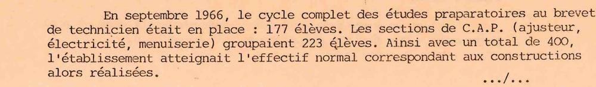
Septembre 1966 : 400 élèves — Bulletin n°1 de l'Amicale des anciens élèves, 1984, p. 4
1967
Les bacs de technicien F1 et F3
Ouverture du baccalauréat de technicien F1 (construction mécanique) et F3 (électrotechnique). Le CAP de menuisier est arrêté.
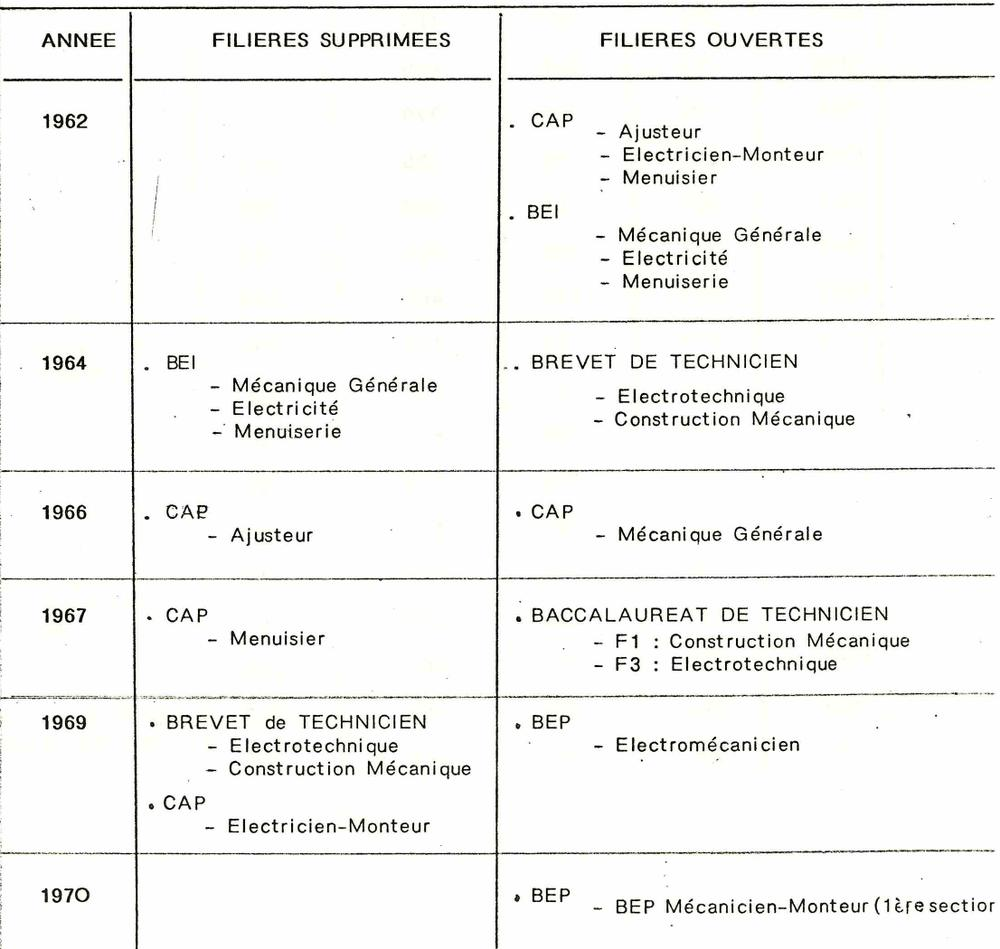
Les filières ouvertes et fermées de 1962 à 1970 — Bulletin n°1 de l'Amicale des anciens élèves, 1984, p. 17
1968
L'école prend le nom de Marcel Callo
Pour mettre fin aux confusions entre les deux écoles « Saint-Joseph », l'école technique prend le nom de Marcel Callo. Né à Rennes en 1921 dans une famille originaire des environs de Redon, apprenti typographe, militant de la JOC, il est mort au camp de Mauthausen le 19 mars 1945.
Le choix du nom et le portrait de Marcel Callo — Bulletin n°1 de l'Amicale des anciens élèves, 1984, p. 5
1970
L'école vue du ciel
La photo aérienne de juin 1970 montre les ateliers en sheds, l'internat et le gymnase. En septembre, la première classe de BEP mécanicien-monteur ouvre.
Photo aérienne, juin 1970 — Bulletin n°1 de l'Amicale des anciens élèves, 1984, p. 8
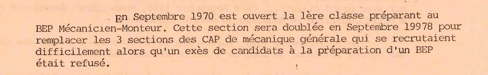
Ouverture du BEP mécanicien-monteur, septembre 1970 — Bulletin n°1 de l'Amicale des anciens élèves, 1984, p. 5
1972
Un nouvel atelier d'électricité et un foyer
Un nouvel atelier d'électricité est construit au bout des salles de dessin, ce qui agrandit l'atelier de mécanique. Sous cette salle, un foyer est aménagé pour les élèves.
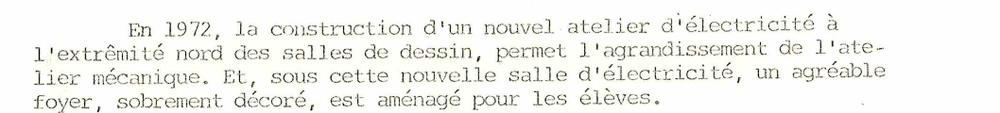
Le nouvel atelier d'électricité et le foyer — Bulletin n°1 de l'Amicale des anciens élèves, 1984, p. 6Atelier d'électrotechnique (prospectus de l'école) — Bulletin n°1 de l'Amicale des anciens élèves, 1984, p. 9
1977
La grande pelouse
En janvier 1977, le nouveau terrain est remblayé, puis nivelé en juillet. Une vaste pelouse accueille désormais les élèves pendant les récréations.
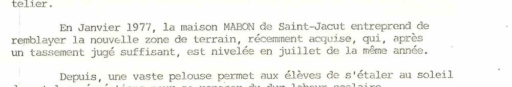
Aménagement du nouveau terrain, 1977 — Bulletin n°1 de l'Amicale des anciens élèves, 1984, p. 6
1978
L'atelier automobile
Un atelier automobile de 700 m², avec des salles sur deux niveaux, ouvre en septembre 1978 avec le BEP automobile. Une deuxième section de BEP mécanicien-monteur ouvre aussi.
Atelier de mécanique automobile (prospectus de l'école) — Bulletin n°1 de l'Amicale des anciens élèves, 1984, p. 9
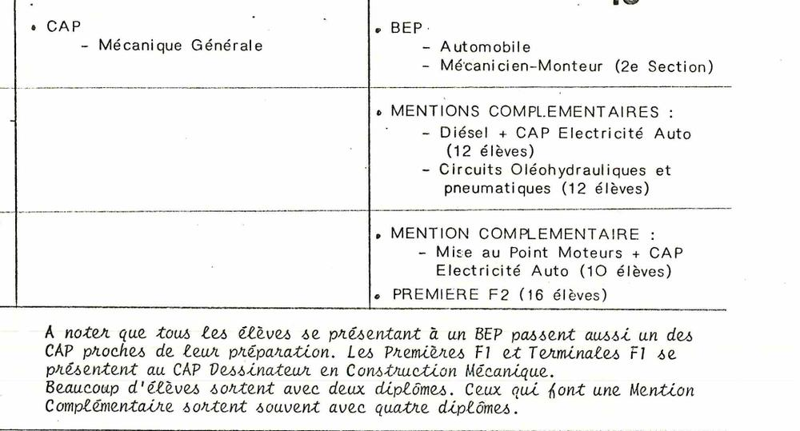
Filières ouvertes en 1978, 1981 et 1983 — Bulletin n°1 de l'Amicale des anciens élèves, 1984, p. 18
1979
Une école qui s'agrandit et devient mixte
La photo aérienne de mai 1979 montre le nouvel atelier automobile. Le tableau des effectifs indique qu'à compter de cette date l'école est mixte : une fille la première année, dix en 1982.
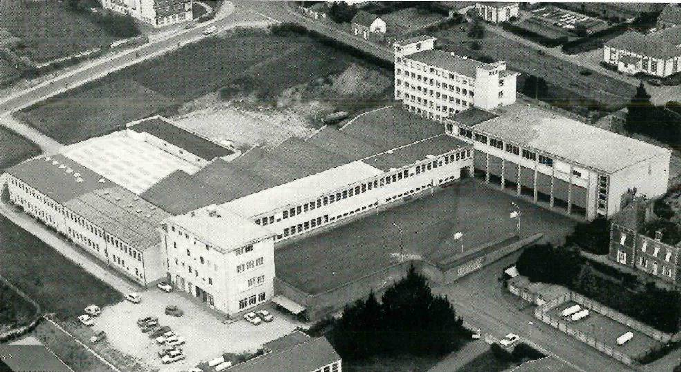
Photo aérienne, mai 1979 — Bulletin n°1 de l'Amicale des anciens élèves, 1984, p. 9
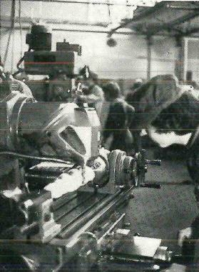
Atelier de mécanique générale (prospectus de l'école) — Bulletin n°1 de l'Amicale des anciens élèves, 1984, p. 9
1981
Mentions complémentaires et nouveau propriétaire
Ouverture des mentions complémentaires Diesel et électricité automobile, et circuits oléohydrauliques et pneumatiques. En mars 1981, les bâtiments sont transférés à la Congrégation des Frères de Ploërmel. La gestion de l'école est confiée à une association de gestion.
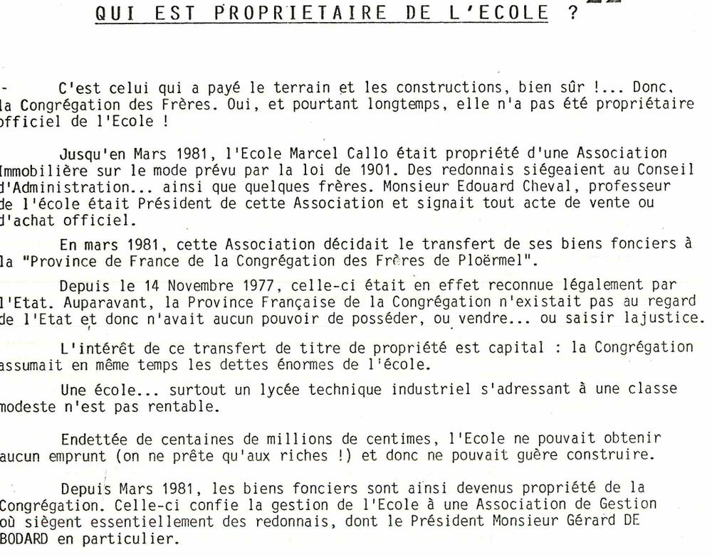
« Qui est propriétaire de l'école ? » — Bulletin n°1 de l'Amicale des anciens élèves, 1984, p. 22
1982
Le grand rassemblement des anciens
En mai 1982 a lieu le premier grand rassemblement de tous les anciens élèves et amis de l'école. Le second est annoncé pour avril ou mai 1985 : un volontaire par classe est invité à rassembler ses camarades.
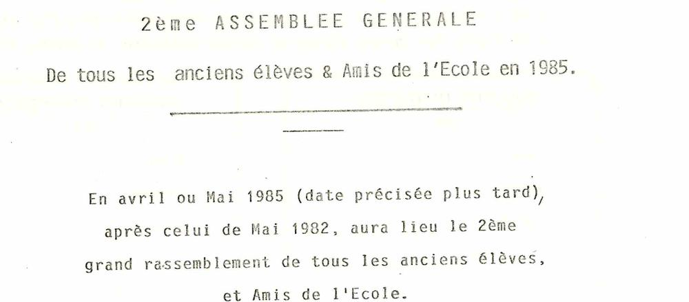
Annonce du 2e grand rassemblement, après celui de mai 1982 — Bulletin n°1 de l'Amicale des anciens élèves, 1984, p. 6
1983
La solidarité de l'Amicale
Le 23 avril 1983, le conseil d'administration de l'Amicale répartit les 2 000 F de cotisations 1982 entre cinq familles d'élèves en difficulté. La cotisation est fixée à 80 F, ou 30 F pour les anciens au service militaire, en études ou au chômage. À la rentrée, l'école compte 471 élèves.
« À quoi servent vos cotisations ? » — Bulletin n°1 de l'Amicale des anciens élèves, 1984, p. 7
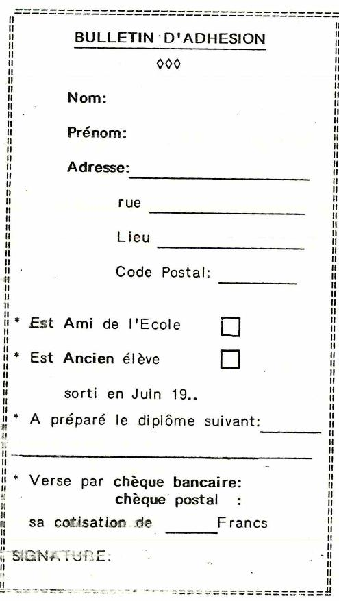
Le bulletin d'adhésion à l'Amicale — Bulletin n°1 de l'Amicale des anciens élèves, 1984, p. 7
1984
Le Bulletin n°1 de l'Amicale
L'Amicale des anciens élèves et amis publie son premier bulletin : historique, filières, résultats, aide à l'emploi, vie de l'Amicale. L'école organise ses opérations « portes ouvertes » et place chaque année 30 à 50 jeunes grâce aux offres d'emploi qu'elle reçoit.
Couverture du Bulletin n°1 — Bulletin n°1 de l'Amicale des anciens élèves, 1984, p. 1
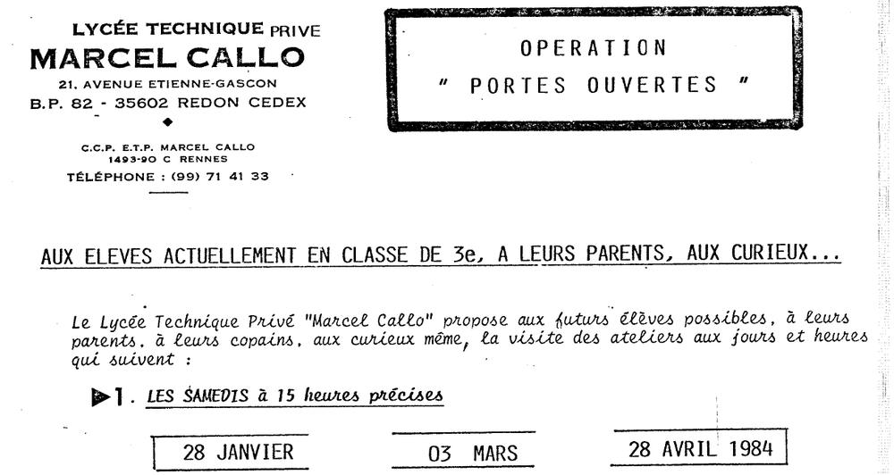
Opération « portes ouvertes » de 1984 — Bulletin n°1 de l'Amicale des anciens élèves, 1984, p. 11
2026
À nous d'écrire la suite
Lycée général et technologique, lycée professionnel, Pôle Sup et apprentissage : Marcel Callo forme toujours les jeunes du pays de Redon. Le 18 décembre 2026, l'Assemblée Générale constitutive relance le réseau des anciens.
Le lycée Marcel Callo aujourd'hui, avenue Étienne Gascon